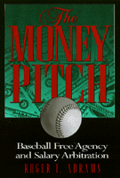

An insider's guide to the economics of Baseball
An insider's guide to the economics of Baseball


 An insider's guide to the economics of Baseball
An insider's guide to the economics of Baseball

|  |
The Money PitchBaseball Free Agency and Salary ArbitrationRoger I. Abramscloth EAN: 978-1-56639-774-2 (ISBN: 1-56639-774-X) |
"Game Theory and Strategic Negotiation are hot topics among some academic, but a bit much for normal people. Roger Abrams' latest book is a great way for any red-blooded American (i.e., a baseball fan) to understand the basics of these theories, and to gain a more sophisticated insight into the business of baseball. It is a masterful combination of theory, data, and war stories."
—Stephen F. Ross, Professor of Law, University of Illinois
Professional baseball players have always been well paid. In 1869, Harry Wright paid his Cincinnati Red Stockings about seven times what an average workingman earned. Today, on average, players earn more than fifty times the average worker's salary. In fact, on December 12, 1998, pitcher Kevin Brown agreed to a seven-year, $105,000,000 contract with the Los Angeles Dodgers, the first nine-figure contract in baseball history. Brown will be earning over $400,000 per game; more than 17,000 fans have to show up at Dodger Stadium every night just to pay his salary.
Why are baseball players paid so much money? In this insightful book, legal scholar and salary arbitrator Roger Abrams tells the story of how a few thousand very talented young men obtain their extraordinary riches. Juggling personal experience and business economics, game theory and baseball history, he explains how agents negotiate compensation, how salary arbitration works, and how the free agency "auction" operates. In addition, he looks at the context in which these systems operate: the players' collective bargaining agreement, the distribution of quality players among the clubs, even the costs of other forms of entertainment with which baseball competes.
Throughout, Dean Abrams illustrates his explanations with stories and quotations—even an occasional statistic, though following the dictum of star pitcher, club owner, and sporting goods tycoon Albert Spalding, he has kept the book as free of these as possible. He explains supply and demand by the cost of a bar of soap for Christy Mathewson's shower. He illustrates salary negotiation with an imaginary case based on Roy Hobbs, star of The Natural. He leads the reader through the breath-taking successes of agent Scott Boras to explain the intricacies of free agent negotiating.
Although studies have shown that increases in admissions prices precede rather than follow the rise in player salaries, fans are understandably bemused by skyrocketing salaries. Dean Abrams does not shy away from the question of whether it is "fair" for an athlete to earn more than $10,000,000 a year. He looks at issues of player (and team) loyalty and player attitudes, both today and historically, and at what increased salaries have meant for the national pastime, financially and in the eyes of its fans. The Money Pitch concludes that "the money pitch is a story of good fortune, good timing, and great leadership, all resulting from playing a child's game—a story that is uniquely American."
Excerpt available at www.temple.edu/tempress
"The Money Pitch tells [its] audience a host of enjoyable as well as insightful stories about the history of baseball's Ty Cobb and others...[Its] primary focus is the current law and economics of this game, and the impact that the free agency and salary arbitration secured by the players union has had on player salaries, team payrolls, and competitive balance in baseball. Fascinating, insightful, impressive, and informative."
—Paul Weiler, Henry J. Friendly Professor of Law, Harvard Law School
"This is a clear-headed, forthright, learned book—an insider's study of the business of baseball, from a revealing angle. His range, roughly is from The Natural to Getting to Yes to Barbarians at the Gate. To his own knowledge, gained from years as a salary arbitrator, Mr. Abrams adds insights form antitrust analysis, game theory, and the history of professional sport (from A. G. Spalding and Honus Wagner to Orlando 'El Duque' Hernandez and recent Yankee rosters). Seldom are statistics used this well."
—Allen Boyer, lawyer and writer, New York City
"[The Money Pitch] is well written and interesting... Abrams uses illustrative material very well. The book has a wealth of information, and even readers who know a good deal about baseball as a sport and business will learn new things. For example, Abrams's descriptions of his own experiences as an arbitrator provides a good vantage point on the arbitration process. And he employs economic concepts effectively to help in understanding the salary-setting processes discussed in the book."
—Lawrence Baum, Law & Politics Book Review
"[A] stimulating and informative book. Most people interested in the subject, regardless of their knowledge, will profit from reading it. Abrams makes salary determination in baseball more understandable, and for this he is to be commended."
—James W. Eaton, Nine
"Abrams provides an insider's guide to the economies of the game and the fairness issue of an athlete earning $10 million a year. He illustrates how the system works, how agents negotiate, and how the free agency market operates....This is a good read for people looking for answers to free agency and salary arbitration."
—Larry R. Little, Library Journal
Preface
Introduction
1. A.G. Spalding and the Development of Baseball Professionalism
2. Baseball's Salary System
3. The Baseball Marketplace: Economics and Game Theory
4. The Ballplayers, the Owners, the Agents, and the Union
5. Roy Hobbs and the New York Knights: A Salary Negotiation
6. Ty Cobb and Negotiation Hardball
7. Salary Arbitration in Operation
8. The Free Agency Auction
9. Player Attitude and Disloyalty
10. Conclusion
Notes
Bibliography
Index
 | Roger I. Abrams is a major league baseball salary arbitrator who has arbitrated such cases as those involving Ron Darling and Brett Butler. He is Richardson Professor of Law at Northeastern University School of Law and has taught and written in the field of sports law for more than a decade. He is the author of Legal Bases: Baseball and the Law, also published by Temple University Press. |
Sports
Business/Economics
Law and Criminology
© 2015 Temple University. All Rights Reserved. This page: http://www.temple.edu/tempress/titles/1486_reg.html.